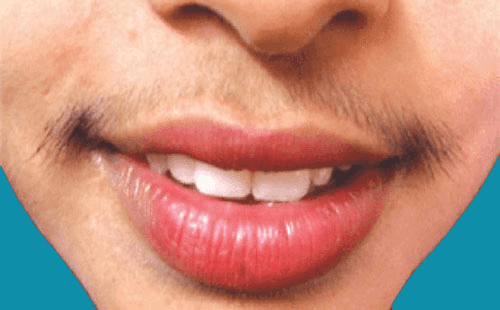

Hirsutism refers to excessive growth of dark, thick and coarse hair in an individual (usually female)
in a male pattern. Commonly affected areas are upper lips, chin, central chest, midline of the stomach,
lower back, buttocks and front of thighs. Hirsutism affects approximately 10% of women in Western societies
and is commoner in those of Mediterranean or Middle-Eastern descent.
If the excessive hair is generalised and not in a gender specific pattern, the term is ‘hypertrichosis’,
which means increased (‘hyper’) hair (‘trichosis’). In this leaflet we will only discuss hirsutism.

A tendency to hirsutism does run in some families and is not associated with an excess of androgens. It is normal in some families with Mediterranean or Middle Eastern ancestry.
Having too much hair can be highly embarrassing and cause great distress.
The excess of thick, often dark, hair may be seen on the face, chest, abdomen and upper back. Women from certain ethnic groups tend to have more body hair than others and for them it may be quite normal to have some hair in these areas.
In the rare cases where there is an underlying hormonal disorder, the
treatment is of the underlying disease.
Treatments for hirsutism where there is no underlying cause or in association
with PCOS include: